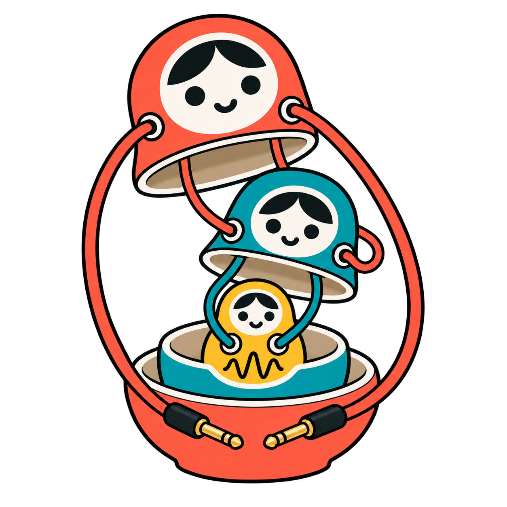

← Open FatMatryoshkaBrand study · October 2026 · proposals
Earlier logo candidates
See 12 new pictorial logos and 12 wordmarks
Keep the nesting. Give the external cables a clearer job. Simplify each child more than its parent. These are generated concept sketches, not replacement production artwork; the current app icon is unchanged.
Start with 10 · Short patch for the sidebar or 03 · Open orbit for a more expressive mark. Each draft includes a candid refinement note. The new small-caps wordmark with its 1-shaped K ascender is already in the app.
Compare the current icon

The baseline: detailed gold child, external cables embracing the lower bowl.Signal tails
Clearest at sidebar size; loose ends suggest connection to another instrument.
Good compact silhouette. Restore the missing teal lower bowl before final artwork.
Download PNG ↗
Candidate 02Wave baseline
External connections become a waveform foundation.
The baseline reads musically, but the draft loses the teal-to-gold wires and invents a cable junction; redraw those.
Download PNG ↗
Candidate 03Open orbit
A compact orbital frame conveys circulation.
My expressive shortlist. Preserve the orbital silhouette, but make the right interior coral wire’s hidden connection unambiguous.
Download PNG ↗
Candidate 04Signal sprouts
Playful growth silhouette, with a simpler lower hierarchy.
Friendly and energetic. The height costs sidebar space; move the teal outgoing wires inside its rim.
Download PNG ↗
Candidate 05Patch brackets
Bracket geometry echoes grouped modules.
Strong assembly metaphor. The squared leads are clear, but the teal outgoing wires need to originate inside the shell.
Download PNG ↗
Candidate 06Cable feet
A grounded mascot with functional signal leads.
Grounded and symmetrical. A little too close to the old enclosing shape; shorten it and separate the inner wiring.
Download PNG ↗
Candidate 07Asymmetric exit
Asymmetry makes input/output direction legible.
Interesting motion, but this draft puts the right loose cable on the child. It must return to the outer coral jack.
Download PNG ↗
Candidate 08Open infinity
Expresses reusable structure through restrained loops.
Good hierarchy simplification. The external loops need a single continuous cable path, without apparent forked junctions.
Download PNG ↗
Candidate 09Cable pedestal
Keeps the nesting front unobstructed.
A clean front, though long side cables still feel enclosing. Keep the gold face this simple; clarify the right coral interior route.
Download PNG ↗
Candidate 10Short patch
Most economical silhouette; fewer details throughout.
My compact shortlist. Best detail progression and short connectors. Finish the hidden right coral connection and remove residual gradients.
Download PNG ↗